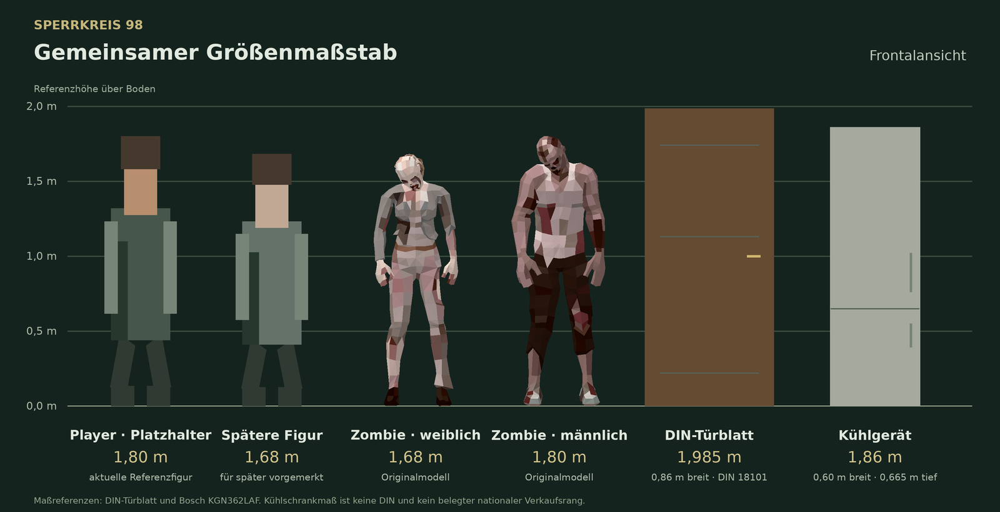
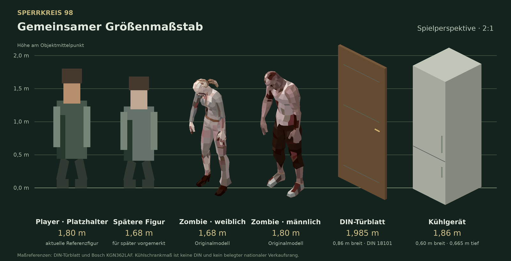

Ein gemeinsamer Maßstab
Player, vorhandene Polyart-Zombies, Türblatt und Kühlgerät im selben Größenverhältnis. Die weibliche Spielerfigur ist ausschließlich als Größenreferenz für später vorgemerkt.


Vereinbarte Referenzen
| Referenz | Maß |
|---|---|
| Player | 1,80 m |
| Weiblicher Player, später | 1,68 m |
| Türblatt nach DIN 18101 | 0,860 m breit × 1,985 m hoch |
| Kühlgerät, Bosch KGN362LAF als Maßreferenz | 1,860 m hoch × 0,600 m breit × 0,665 m tief |
| Weibliche Zombies | 1,58–1,78 m; Mitte etwa 1,68 m |
| Männliche Zombies | 1,70–1,90 m; Mitte etwa 1,80 m |
Die Größenbereiche der Zombies sind gestalterische Festlegungen und überlappen sich. Jede Figur behält ihre Größe. Körperformen und vorhandene Posen stammen aus dem gelieferten Modellpaket; der Player bleibt vorerst ein gezeichneter Platzhalter.
Quellen und Einordnung
- Herstellertabelle: Wandöffnungen und Türen für den Wohnungsbau. Verwendet wird das Türblattmaß, nicht die Größe des freien Durchgangs.
- Bosch: Maßblatt KGN362LAF. Konkretes Serienmaß als Alltagsreferenz; keine DIN und kein belegter deutschlandweiter Bestseller.
- Zombie-Originalmodelle: Denys Almaral, Polyart Zombies with Animations Free Pack.
Diese Stufe kalibriert die Größen. Der Umbau auf laufend berechnete 3D-Animationen und der gemeinsame Tempo-/Schritt-Abgleich sind die folgenden Schritte. Ein vollständiger 3D-Umbau der Umgebung bleibt zurückgestellt.